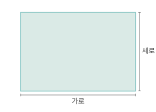
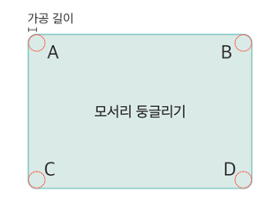
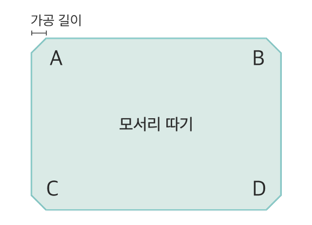
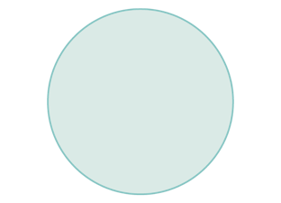

직사각형
재단 크기

- 가로 300mm ~ 2000mm, 세로 300mm ~ 1000mm까지 재단이 가능합니다.
모서리 가공


- 모서리둥글리기와 모서리따기 중 가공 방법을 선택한 후 가공위치, 가공 길이를 선택하세요.
강화 마크
- 강화마크는 일반유리와 구별할 수 있는 인증마크 입니다.
원형
- 원형 가공시 6% 가격이 추가됩니다.
재단 크기

- 지름 260mm ~ 1200mm 까지 재단이 가능합니다.
강화 마크
- 강화마크는 일반유리와 구별할 수 있는 인증마크 입니다.